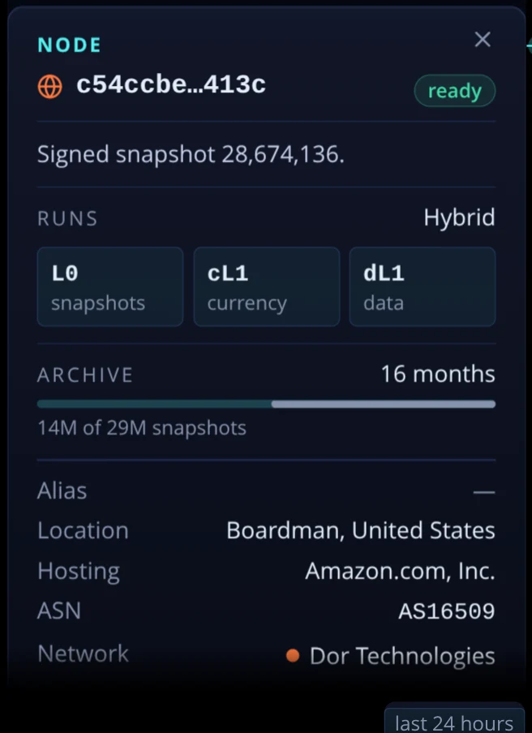
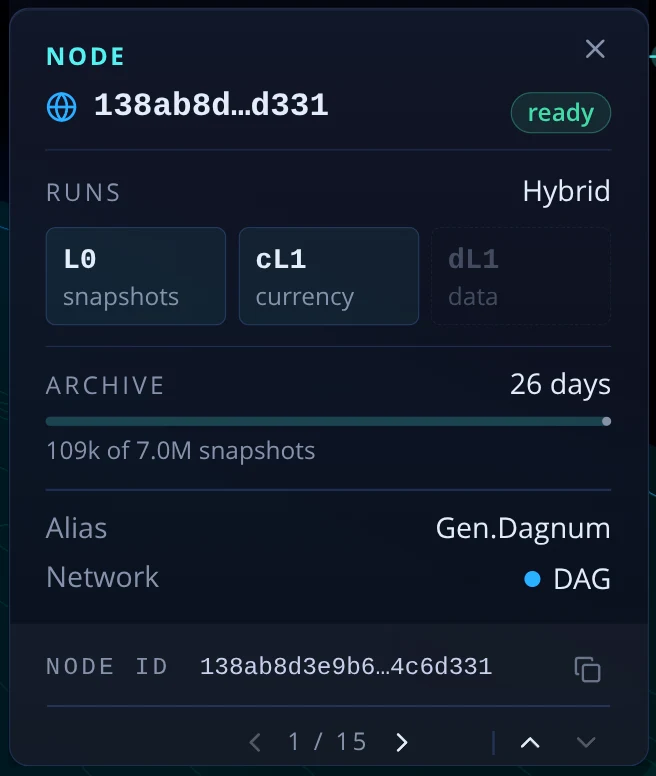
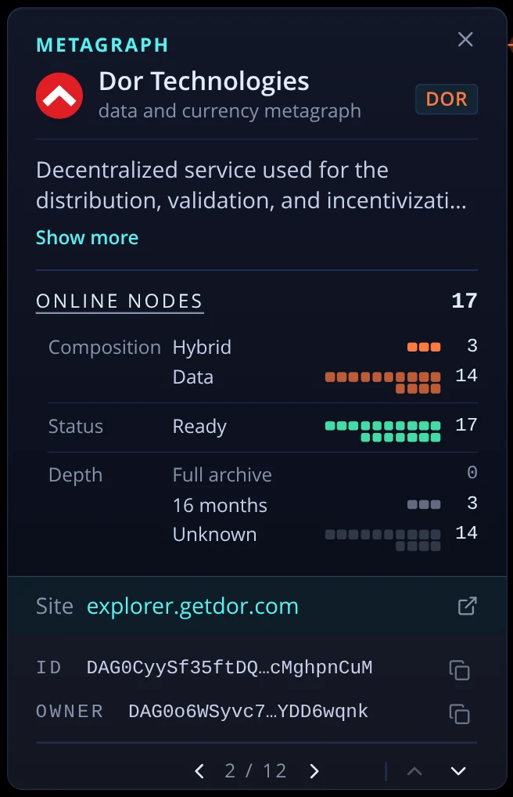

Callouts and the cards they mirror
Every callout the scene can stand, photographed from the running app beside the right-rail card for the same subject. A callout is the scene's short label; the card is the full reading. So each pair is checked for three things: does the label say what the mark in the scene shows, does it agree with its card, and does either repeat or cut something it should not.
The pictures are real (1600 × 900, dark, mainnet, taken today). Suggestions are numbered — L1 for a label, C1 for a card — so you can answer with the numbers you want. Mock-ups show only the part that changes; a number in a mock-up that is not in a photograph is a stand-in (Dor's 52 KB, the 18% and 2 cities, the two not-ready nodes). Nothing here is built.
Global snapshot Snapshots
Callout now

Suggested
L1Say what the ring is pointing at.
The bar's length is bytes, and the ring sits on Dor's share of that length — but the label counts snapshots ("13 of 16 anchors"). Give it both, each named: the count in the card's own word, and the size as the chip on the right.
Global snapshot
6,995,0261m agopinned
DOR13 of 16 snapshots52 of 65 KB
L2Same order as the card's head.The card reads age, then state; the label reads state, then age. Drawn above in the card's order.
C1One word for size.This card says "65 KB"; the Metagraph snapshot card says "5.8 KB compressed". Both are compressed bytes as anchored, so both should read the same way: "65 KB compressed".
Metagraph snapshot Snapshots
Callout now

Keep. With the global label below it, nothing is missing: this one names the tile, that one names where it fell.
Suggested
C2No tabs until there is something under them.
Before the snapshot is decompressed the card shows two tabs, a line saying there is nothing to show, three facts, and only then the control that fills the tabs. The control belongs where the tabs are; the tabs arrive with their content.
Before decompressing
Metagraph snapshot
28,674,136
Anchored to 6,995,026.46s ago
Fees paid0.0090 DAG
Size5.8 KB compressed
Signed by3 L0 validators
Decompress this snapshot↓
After
Metagraph snapshot
28,674,136
Anchored to 6,995,026.46s ago
StateData
latestOrdinal0 records
latestUpdates0 records
Fees paid0.0090 DAG
Size5.8 KB compressed
C3"State" in the foot becomes "State hash".The foot row and the tab are both called STATE and mean different things. Drawn in the first mock-up above.
Node Snapshots (top row), Geography (bottom row); Hypergraph uses the same label
Callout now


Card now


Suggested
L3In Snapshots, the label says what the card leads with.
The card opens with "Signed snapshot 28,674,136." — the reason this node is on screen. The label beside the node says its layers and status, which are true in every view. One more short line carries the relation where there is one.
Node
c54ccbe…413cDOR
L0cL1dL1ready
Signed 28,674,136
C4Drop "Network" when the Metagraph card is already in the pile.In Snapshots the Metagraph card sits two rungs above this one and says Dor Technologies as its title. The node card already drops Country and Hosting on that rule; Network does not follow it yet. It stays wherever nothing above says it (Geography with the filter on All).
C5No "Alias" row for a node that has none.A dash there is not a reading that failed; the node simply has no alias. The row shows when there is one (bottom card: Gen.Dagnum) and is left out when there is not.
L4Labels keep clear of the rails.
In Hypergraph a node on the right side of a network puts its label under the right rail — the placement only knows about the rails when they are tablet sheets. It should flip to the other side of the node, as it already does at a screen edge.

Metagraph Hypergraph, with the filter on a network
Callout now

Card now

Keep.
Suggested
L5Name the status only when it is not all ready.
The scene draws a node that is not ready as a hollow chip. When every node is ready the label stays as it is ("17 nodes"); when some are not, it says how many are, so the hollow chips have a number next to them.
All ready — as today
Metagraph
Dor TechnologiesDOR
17 nodesL0cL1dL1
Two not ready
Metagraph
Dor TechnologiesDOR
15 of 17 nodes readyL0cL1dL1
Country Geography
Callout now

Keep.
Suggested
C6"the selection's nodes" becomes plain.
"Selection" is our word for the filter. With the filter on All the sentence is about every node; with a network picked it is about that network's.
Country
Germany
36% of all nodes, in 8 cities.
Country
Germany
18% of Dor's nodes, in 2 cities.
Provider Geography
Callout now

Keep. It shows the full name and the city, which the card does not manage.
Suggested
C7The provider's name is not cut for the city chip.
"Hetzner Online Gm…" loses its end because the city shares the title row. The city is the first thing the lead can say, and the title keeps the row.
Provider
Hetzner Online GmbH
Nuremberg. 25% of Germany's nodes.
My picksL1 and L4 first: one makes the global label name the quantity its ring points at, the other is a label drawn under a card. Then C2 (tabs with nothing under them), C7 (a cut-off name) and C4 (a fact the pile already states). L2, C1, C3, C5 and C6 are one-line consistency fixes that can ride along. L3 and L5 add a line to a label, so they are the two I would look at in the running app before keeping.